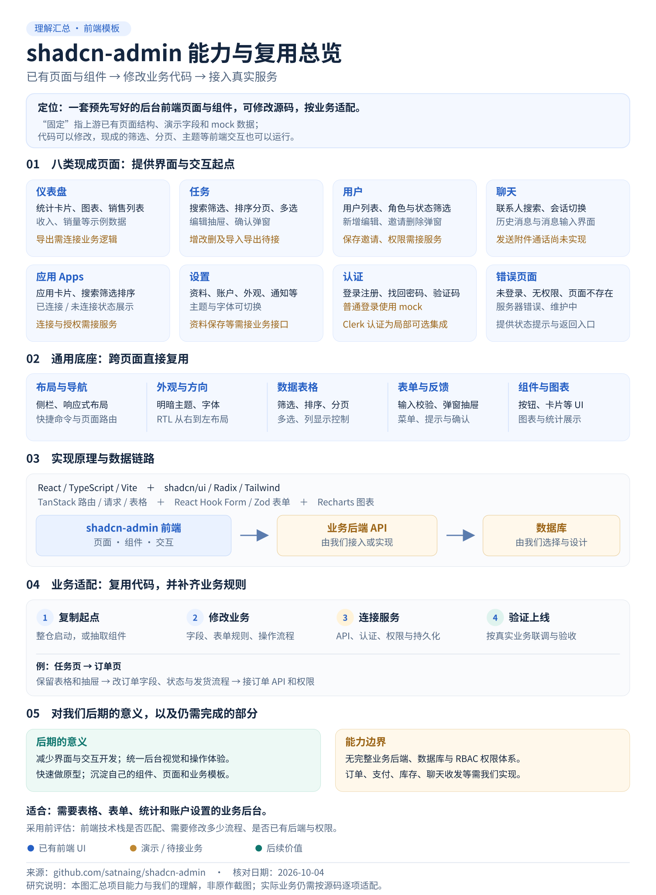

01
仪表盘 Dashboard
复用统计与数据展示页面。
- 收入、订阅、销量、活跃人数等统计卡片。
- 月度柱状图、最近销售记录。
- 流量分析：点击、访客、跳出率、访问时长、来源与设备。
- 概览与分析标签页切换，响应式排版。
演示流程统计值为本地示例，部分图表使用随机数据；Download 未实现导出，Reports / Notifications 标签禁用。
查看仪表盘证据它提供一套预先写好的管理后台页面、组件和交互。我们复用这套代码，修改字段、规则和流程，再连接自己的后端服务。
“模板”是我们理解复用方式的便捷说法。作者将它称为可复用的 Dashboard UI 集合，并明确不将其定位为完整 starter project。这里的“固定”指预写好的起点，不代表代码不能改。依据：项目说明
01 / 支持哪些模块
页面存在、前端交互可用、业务服务接通，是三个不同层次。
复用统计与数据展示页面。
演示流程统计值为本地示例，部分图表使用随机数据；Download 未实现导出，Reports / Notifications 标签禁用。
查看仪表盘证据复用列表管理与表单编辑模式。
前端可用表格交互已经实现。演示流程创建、编辑只展示提交结果，批量修改和导出只模拟成功提示；导入展示文件信息。
查看任务证据复用用户、客户或成员管理界面。
演示流程列表是本地示例用户。保存与邀请展示提交内容；角色选项只是界面字段，完整访问控制需另做。
查看用户证据复用客服或内部消息界面的布局。
待接服务会话使用本地样例。发送消息、实时接收、图片附件上传、电话和视频通话尚未实现。
查看聊天证据复用第三方应用连接管理的呈现方式。
前端可用搜索、筛选、排序可用。待接服务连接状态来自固定数组，Connect 按钮未实现第三方授权。
查看应用证据复用个人账户与偏好设置页面。
前端可用主题、字体和布局偏好有本地实现。演示流程个人资料等业务保存需要接接口，通知设置页面不等于通知发送服务。
查看设置证据复用账户入口的表单与布局。
演示流程普通登录设置 mock token。Clerk 只在局部路由集成；其示例列表仍是本地用户，不能当作完整用户管理和权限系统。
查看认证证据复用异常情况下的提示页面。
前端可用提示页面已提供。什么时候触发这些状态，需要和实际接口、路由及权限逻辑连接。
查看页面目录02 / 一张图整理我们的理解
这张图是我们的研究整理图，覆盖八类模块、通用底座、技术原理、业务链路和复用步骤。

03 / 实现原理
关键是拿到可修改的组件和页面源码，再把数据与业务操作接进去。
用组件描述页面和状态，TypeScript 约束数据类型，Vite 负责开发与构建。TanStack Router 配合构建插件从路由文件生成路由树，负责页面导航，并支持代码拆分；侧栏菜单由配置定义。
项目中直接保存按钮、菜单、弹窗等组件源码。Radix 提供基础交互，Tailwind 控制样式、响应式和主题；我们可以编辑这些源码。
表格根据数据和列定义计算搜索、筛选、排序、分页后的行；表单管理输入值，用规则校验后显示错误或提交。校验规则也需按业务改。
Query 提供请求缓存、重试与错误处理配置；Zustand 保存认证等前端状态；Recharts 绘制图表。它们提供工具，具体业务接口仍要接入。
浏览器通常通过后端 API 访问业务数据。仅创建数据库表或替换连接地址，不会自动生成与业务匹配的页面、流程和权限。技术栈与入口证据
04 / 怎样复用
代码层面的复用；适配工作包含页面、数据和规则。
保留侧栏、布局、主题和需要的页面，删减示例入口，再修改业务字段与操作。适合新建 React 后台、快速原型。
这是二次开发起点；上线前仍要替换演示流程、整理认证和接口。
把表格、表单、弹窗或整页搬到已有 React 项目，同时处理依赖、样式、路由和状态上下文。适合已有前端基础的项目。
搬运整页通常涉及更多配套代码；优先迁移边界清晰的组件。
明确管理对象、字段、状态、用户角色和操作规则。
列表用 Tasks / Users，统计用 Dashboard，消息界面用 Chats。
改列定义、表单校验、按钮动作、菜单和页面文案。
接查询与写入 API，补后端权限、数据库和业务流程。
检查保存与刷新、错误反馈、真实权限和手机操作。
这是我们可以进行的改造方向，仓库本身没有现成的订单业务。
| 现成任务页面 | 我们的订单业务 | 需要做的工作 |
|---|---|---|
| 任务编号、标题 | 订单号、客户、金额 | 修改数据类型与表格列定义 |
| 任务状态、优先级 | 待付款、已支付、已发货 | 修改筛选选项，定义状态转换规则 |
| 创建 / 编辑抽屉 | 订单详情、地址修改、发货表单 | 修改表单字段、校验和按钮动作 |
| 本地演示数据 | 真实订单数据 | 调用查询 API；数据量大时接服务端分页与筛选 |
| 模拟提交结果 | 保存、发货、取消、退款 | 实现后端操作、权限与状态更新，再刷新页面数据 |
布局、表格、分页控件、筛选栏、弹窗、抽屉、主题和反馈组件。
业务字段、权限、状态转换、操作流程、统计口径、API 和数据库结构。
05 / 对我们后期的意义
以下是根据源码能力推导出的使用价值；具体节省多少时间，需要在我们的真实项目中验证。
先复用列表、编辑抽屉和统计面板，让团队讨论真实字段和流程，不必从空白页面搭起。
让用户、任务、资产等管理页使用一致的筛选、分页、表单和错误反馈方式。
把完成业务适配的表格、表单和页面沉淀下来，下一次复用我们的版本与接口约定。
提供现成页面源码、业务字段和接口文档，让 AI 在明确结构上改代码，再由我们验证结果。
| 我们的项目方向 | 可复用模块 | 仍需补齐 |
|---|---|---|
| 内部任务、工单管理 | Tasks + Users + Dashboard | 任务分配、状态流转、权限、持久化 |
| 素材或资产管理后台 | 列表表格 + 编辑表单 + 设置 | 预览、文件上传、存储、标签与检索 |
| CRM、客户或成员管理 | Users + 设置 + Dashboard | 跟进记录、组织关系、邀请邮件、访问范围 |
| SaaS 或 AI 工具管理台 | Dashboard + 账户 + Apps | 使用量统计、计费、模型 API、授权与租户隔离 |
| 客服、内部消息工具 | Chats 的联系人与会话 UI | 真实收发、存储、未读 / 已读、附件和实时连接 |
建议的第一步：选一个“列表 → 查看 / 编辑 → 保存 → 刷新”的小业务闭环，用真实 API 跑通，再判断是否值得将它发展成我们的后台基础工程。
06 / 适用范围与常见误解
React 管理后台、内部 CRUD 工具、SaaS 控制台、客户 / 成员管理、统计看板和后台原型；尤其适合列表、表单和数据展示较多的项目。
复杂流程审批、大规模数据、精细权限、多租户、实时聊天、支付和音视频等。现成 UI 可做起点，这些服务与流程要另行设计实现。
上游已经写好页面结构、字段和演示流程。我们可以改源码、增删模块和换主题；运行时搜索、筛选等操作有动态交互。固定的是默认设计，业务适配方式是改代码。
本次核对的工程通过 React 页面源码定义界面，没有根据任意数据库表自动生成业务后台的能力。新业务需修改页面、数据类型、规则与接口。
Users 是管理用户的后台页面；登录、注册、个人设置是账户配套页面。电商消费者的商品浏览、购物车、付款等完整前台需要另做。
普通登录生成模拟 token；角色是界面选项，后端仍需执行权限校验；聊天发送按钮未接发送逻辑。Clerk 是可选的局部真实认证集成，其示例用户列表仍是本地数据。
真实接口与数据库、适合项目的认证与后端权限、业务规则、表单保存与列表刷新、失败反馈；根据需求再接文件、消息、计费等服务。组件升级时要检查上游对 RTL 等组件的定制，避免覆盖自己的修改。
07 / 依据与验证范围
本次为源码与文档研究。页面能力按实现核对；应用方向和后续价值是我们的推断。
本地交付是研究网页与理解图，没有在这里安装或验收上游完整应用，也没有接入真实数据库、Clerk、业务 API 或聊天服务。页面与图为我们自行整理的说明内容，功能判断以所列上游代码为依据。